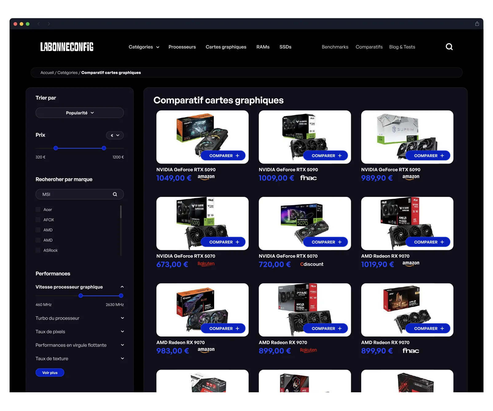
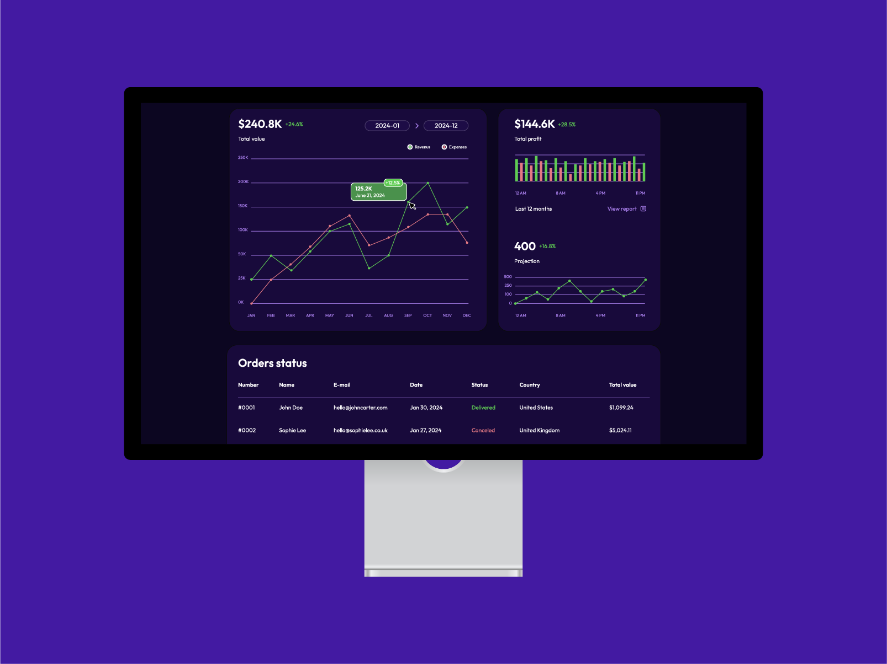
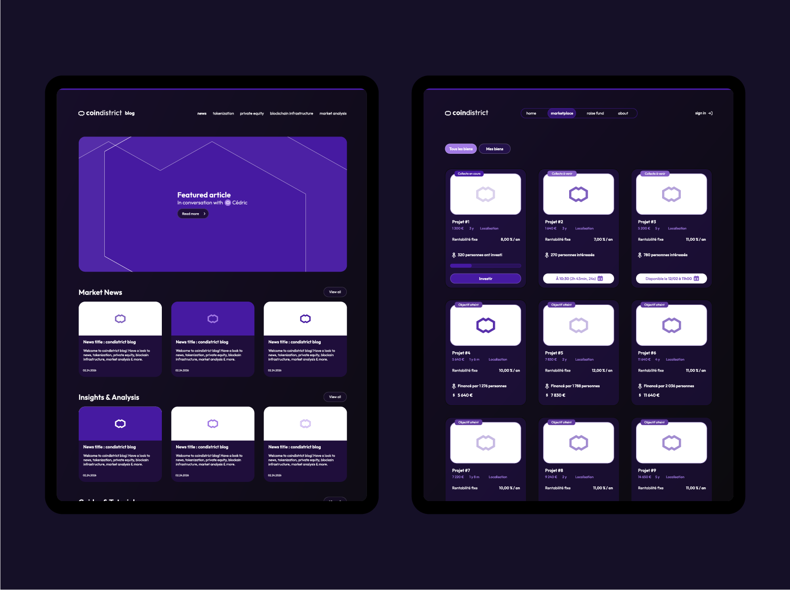
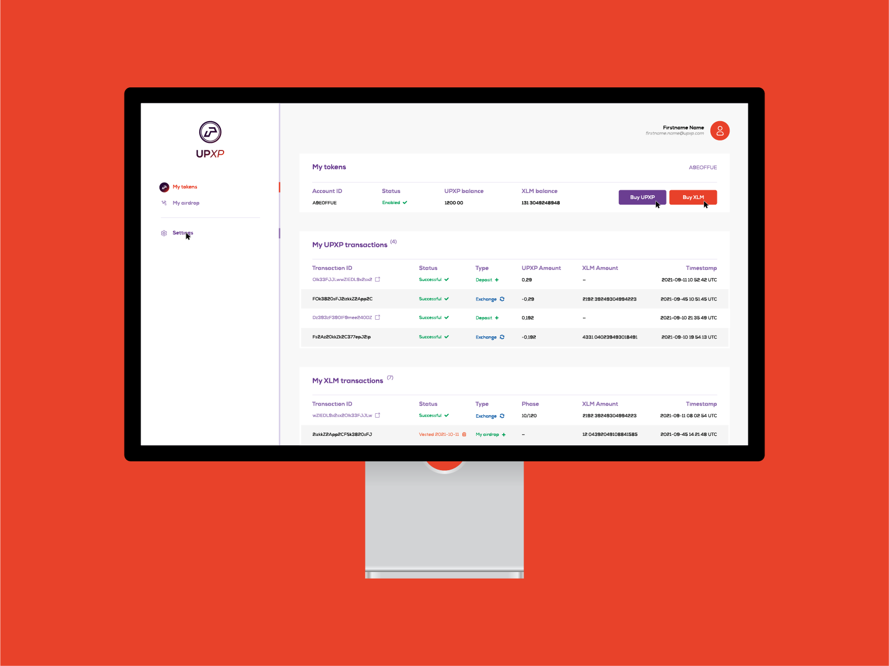
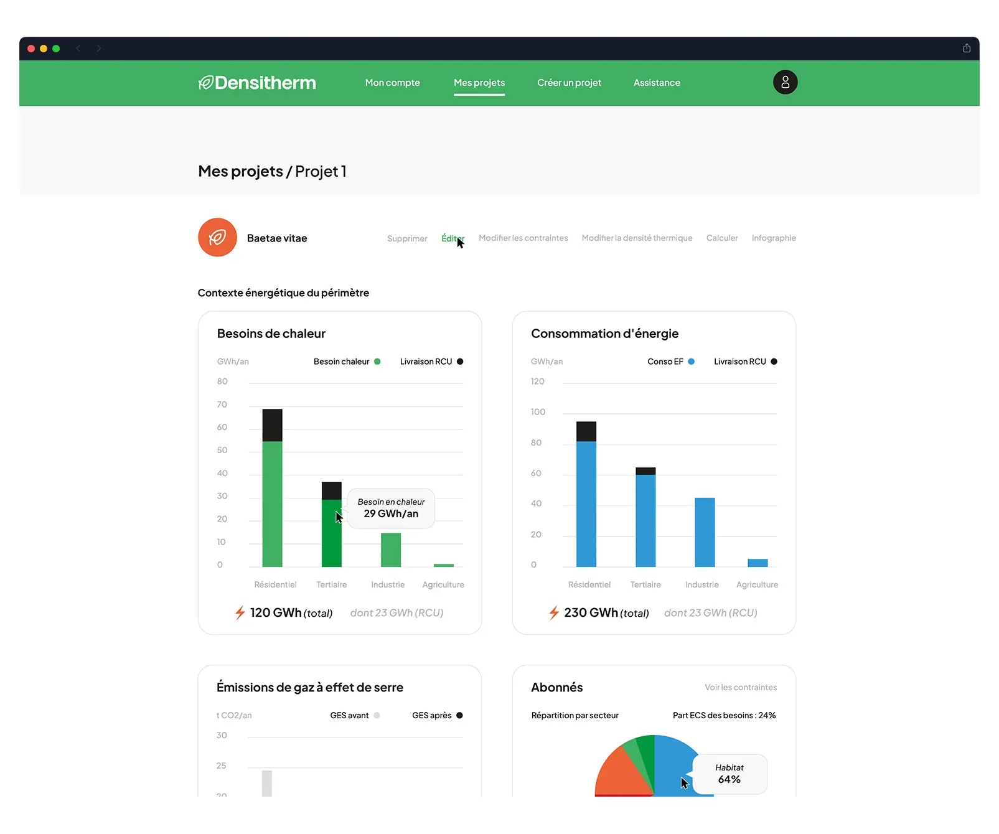

Labonneconfig — Webdesign UI/UX desktop & mobile
Webdesign et UI/UX pour un comparateur en ligne de composants PC.

Voir le projet Labonneconfig →
Une interface efficace doit allier une esthétique forte à une ergonomie sans couture. Le webdesign ne consiste pas seulement à afficher de belles images, mais à guider vos utilisateurs intuitivement tout en valorisant votre offre.
Graphiste & UI/UX designer freelance basé près de Caen, j'interviens dans la création de maquettes web, d'interfaces d'applications, de dashboards complexes et de sites vitrines ou e-commerce. De la réflexion sur le parcours utilisateur (UX) au design visuel haute fidélité (UI), chaque interface est conçue sur mesure pour optimiser l'engagement et la conversion.
Un parcours utilisateur confus ou un design daté freine la conversion de vos prospects.
Découvrez ci-dessous une sélection de projets webdesign, dashboards et interfaces digitales sur mesure.
Webdesign et UI/UX pour un comparateur en ligne de composants PC.

Voir le projet Labonneconfig →
Webdesign et interface UI/UX pour un jeu en ligne de simulation d'urgence.

Voir le projet CTA Pompier →
Webdesign et UI/UX pour une plateforme de cryptomonnaie avec marketplace.


Voir le projet Coin District →
Design d'un dashboard et de l'application web pour une cryptomonnaie.

Voir le projet UPXP →
Création du site web et des maquettes UI pour une société de réseaux de chaleur.

Voir le projet Densitherm →